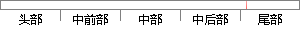

5，KS的数值也都达到了0.
片段位置图

相似结果|
相似片段 1： = 0. 01、"2 = 0. 1，绘制结果如图 5（a）所示，没有采用半透明效果的绘制结果如图 5（b）所示。 试验结果表明，本算法实现的三维可视化绘制结果达到了医学数据场中不同层次的组织同时
相似片段 2：的一系列值，并在q=1附近密集取点，目的是为了考察它在q*1时是否回到经典KS嫡.数值计算的结果如下面的表(’.1卜体5)所示. 通过对这些数据的分析，得到了以下的一些结果..选择其中四个序列
|
※ 片段修改建议 ※
近似词参考：- 达到：到达
系统自动生成语句：5，KS的数值也都到达了0.
注：本片段修改建议为系统自动生成，仅供参考。